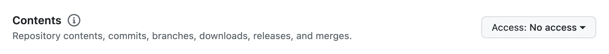
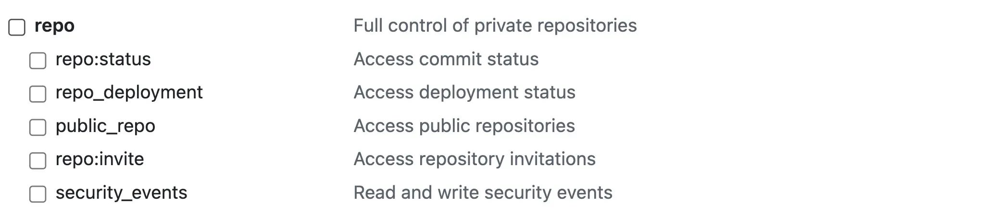

GitHub Guide
Step 1: Create a new repository
Help

Please avoid using an existing (non-empty) GitHub repository, as this may interfere with the app's file/folder management. Do not add any files to the repository after creation.
Once you finish creating the repository, please paste the http (not ssh) URL into Sepia Notes' settings.
Step 2. Create a GitHub personal access token
Help
Both a classic token, and a fine-grained token will work. However, you can't set fine-grained tokens to never expire, so you will have to re-create it at least once a year. Whichever token you choose, please ensure that Sepia Notes has the permission to fetch and push.
In the case of the fine-grained token:
In the case of the classic token:
Step 3. Copy the token into Sepia Notes settings
You can now copy and paste your token into Sepia Notes' settings, and press the "save" button. Please save a copy of this token if plan on using Sepia Notes on another device. Otherwise, you will have to create a new one.
Please be advised that we are in the process of simplifying the connection to GitHub, and we appologise for any undue frustration this procedure may have caused you.